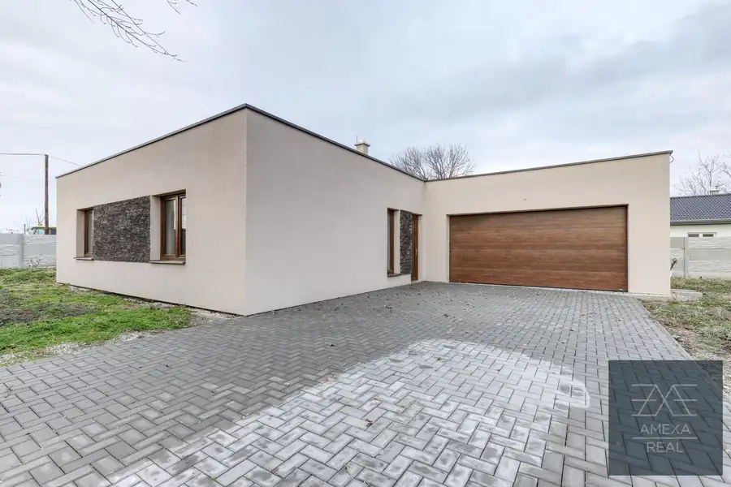
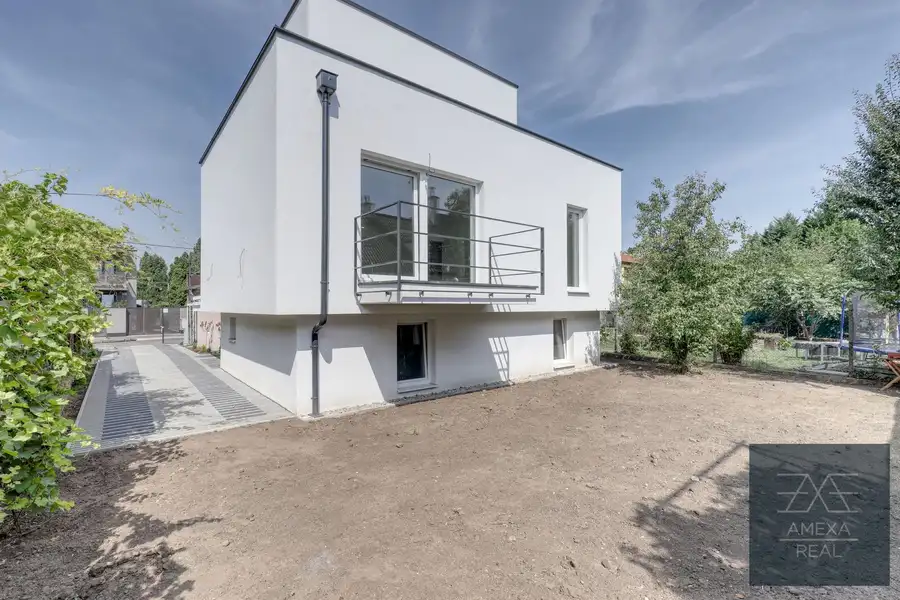
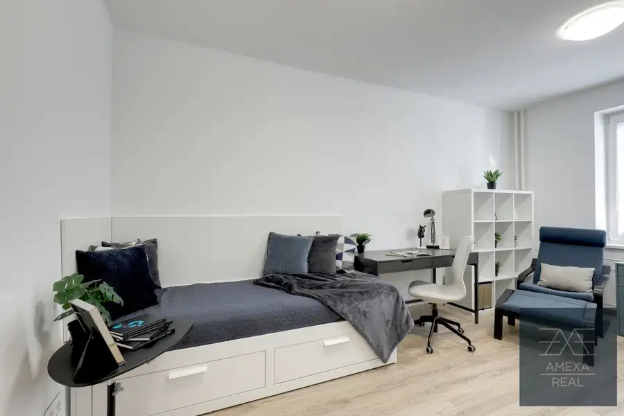

PRENÁJOM kompletne moderne zariadený 2izb.byt v Novom Ružinove
Ružinov, Bratislava
- Dispozícia2-izbový
- Plocha42 m²
- Poschodie3. z 4
- Vlastníctvoosobné
- Energetická triedaA
O nehnuteľnosti
AMEXA REAL ponúka na prenájom kompletne moderne zariadený, 2-izbový byt s balkónom v Novom Ružinove na ulici Na výslní 2/b
» ZÁKLADNÉ INFORMÁCIE
Rozloha bytu je 42 m2 + loggia 8 m2. Nachádza sa na 3. poschodí zo 4, s výťahom. Súčasťou bytu je kúpelňa s vaňou , samostatné wc, kuchyňa spojená s obývačkou a samostatná spálňa. Byt je vhodný pre jednotlivca, alebo pár.
» 3D SCAN
» BENEFITY
» nikdy neobývaný
» výťah
» kompletne moderne zariadený
» balkón
» novostavba
» dostupnosť optického internetu
» dobrá občianska vybavenosť
» parking v cene nájmu
» POPIS NEHNUTEĽNOSTI
Vstup do bytu zabezpečujú bezpečnostné dvere. Za dverami sa nachádza vešiak so šatníkovou skrinkou. Na pravej strane je vchod samostatnej toalety a nasledne vchod do kúpelne so vaňou.c. Na druhej strane je vstavaná skrina. Nasledne ideme chodbou kde vchod do samostanej spálne s východom na balkón. Pokračujeme do obývacej izby s dobre zorganizovaným kuchynským priestorrom so vstavanou chladničkou s mrazničkou, rúrou na pečenie a indukčnou varnou doskou, umývačkou. Jedálenským stolom je oddelená od obývacej časti so sedačkou, konferenčným a TV stolíkom. Z obývacej časti sa výchádza na priestrannú loggiu. Z obydvoch miestností je vstup na loggiu.
» LOKALITA
Ponúkame vám jedinečnú príležitosť prenajať si byt v atraktívnej lokalite na ulici Na výslní v Novom Ružinove. Táto lokalita je skutočným pokladom pre tých, ktorí hľadajú pohodlný a súčasne pokojný život. Nachádza sa v blízkosti centra mesta, čo znamená, že máte jednoduchý prístup ku všetkým hlavným atrakciám a službám, ktoré mesto ponúka. Priamo v okolí nájdete široký výber obchodov a zariadení, ktoré uspokoja vaše každodenné potreby. Potraviny, drogéria, lekárneň a iné sú len na skok od vášho nového bytu. Pre rodiny s deťmi je ulica Na výslní v Novom Ružinove ideálnym miestom na život. Okolie je plné detských ihrísk a parkov, kde sa vaše deti môžu hrať a spoznávať nových priateľov. Okrem toho je v blízkosti aj detská poliklinika, čo je pre rodičov veľkým prínosom.
Šport a voľný čas » V projekte sa nachádza niekoľko detských ihrísk a ďalšie sú plánované.
» DOSTUPNOSŤ A MHD
MHD » Priamo na hlavnej ulici pri projekte sa nachádza zastávka MHD linky 70, 87.
Dostupnosť autom » TESCO Zlaté piesky (8 min), OC NIVY (5 min), Autobusová stanica NIVY (5 min), Hlavná stanica (13 min), Letisko (6 min), dialničný obchvat (1 min).
» PARKOVANIE
K bytu je prislúchajúce konkrétne parkovacie miesto a je v cene nájmu, druhé parkovacie miesto za doplatok 60€
» DOPLŇUJÚCE INFORMÁCIE
Byt je voľný ihneď.
» NÁJOMNÉ, NÁKLADY A KAUCIA
690€ mesačné nájomné
150€ mesačné náklady a energie (1 os.)
840€ kaucia
parking v cene nájmu
V prípade záujmu, či akýchkoľvek otázok ma prosím neváhajte kontaktovať.
Ak nie som dostupný, pošlite prosím SMS, ozvem sa Vám naspäť.
Budem sa na Vás tešiť na obhliadke.
Jozef Ergang
» V cene nie je započítaná provízia realitnej kancelárievo výške 1-mesačného nájmu s energiami
» Prenjímateľ si vyhradzuje právo prijať ľubovoľnú ponuku, alebo ponuku odmietnuť bez udania dôvodu.
» Na nehnuteľnosti bola použitá služba HOMESTAGING, PROFESIONÁLNE NAFOTENIE a 3D SCAN
» Obsah inzerátu, fotografie a texty sú autorským dielom a majetkom spoločnosti AMEXA REAL© s.r.o.
Parametre
| Celková rozloha | 50 m² |
|---|---|
| Úžitková plocha | 42 m² |
| Poschodie | 3 |
| Počet poschodí | 4 |
| Počet izieb | 2 |
| Vlastníctvo | osobné |
| Odvoz odpadu | áno |
| Internet | optika |
| Kúpeľňa | vaňa |
| Vykurovanie | spoločné – vlastná kotolňa |
| Lódžia | áno |
| Pivnica | áno |
| Výťah | áno |
| Parkovanie | vnútorné |
| Postavené z | tehla |
| Zariadenie | zariadený |
| Zateplený objekt | áno |
| Klimatizácia | áno |
| Káblová televízia | áno |
| Energetický certifikát | A |
| Bezbariérový prístup | áno |
| Okná | plastové |
| Orientácia | juhovýchodná |
| Novostavba | áno |
| Dátum zverejnenia | 6. 2. 2024 |
Kde to je
Mohlo by Vás zaujímať

Rodinné domy10 195 000 €Ponúka na predaj rodinný dom v Blahovej Blahová 4-izbový118 m² AMEXA REAL ponúka na predaj pôvabný, nezariadený, samostatne stojaci rodinný dom v obci Blahová, okr. Dunajská Streda. Kľudnú lokalitu a príjemnú…
Rodinné domy4 624 900 €Predaj 4izb. rodinný dom Ružinov - Trnávka Trnávka, Bratislava 4-izbový150 m² » ZÁKLADNÉ INFORMÁCIE » Bratislava – Trnávka – Luhačovická ulica » 3 poschodia » 4 izbový dom na dvoch obytných poschodia » 150 m2 » parkovacie…
Byt10 Cena dohodouNA PRENÁJOM kompletne moderne zariadenú Garźonku Nové Mesto, Bratislava 1-izbový24 m²1. podlažie » ZÁKLADNÉ INFORMÁCIE Rozloha bytu je 24 m2. Nachádza sa na prízemí zo 7 poschodí, s výťahom. Súčasťou bytu je kúpelňa, samostatná toaleta , obývacia…